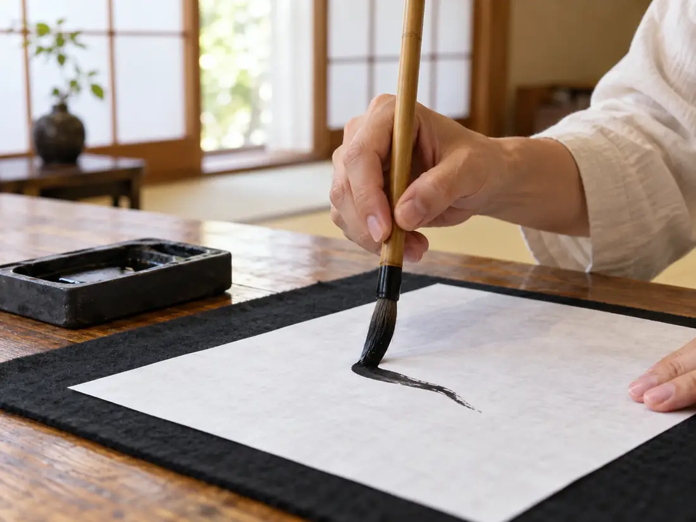
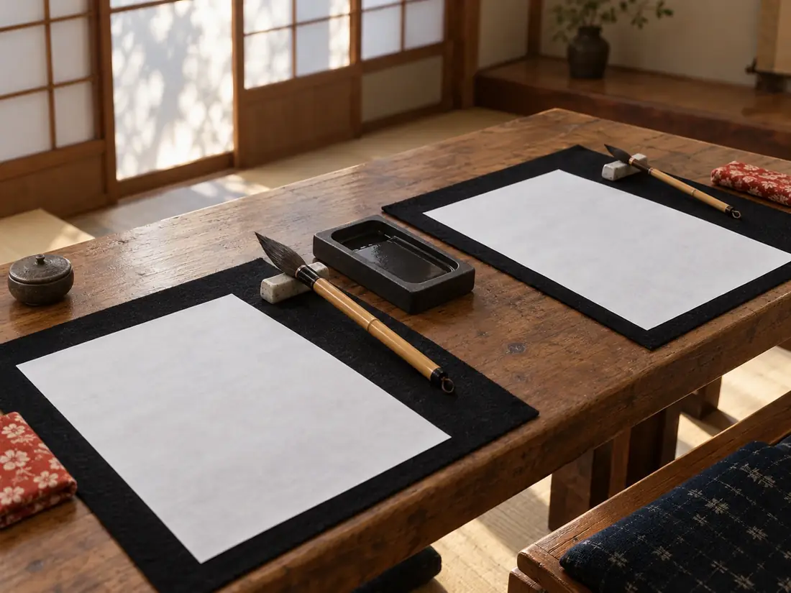
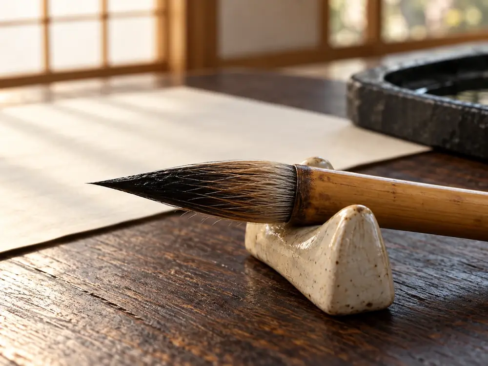
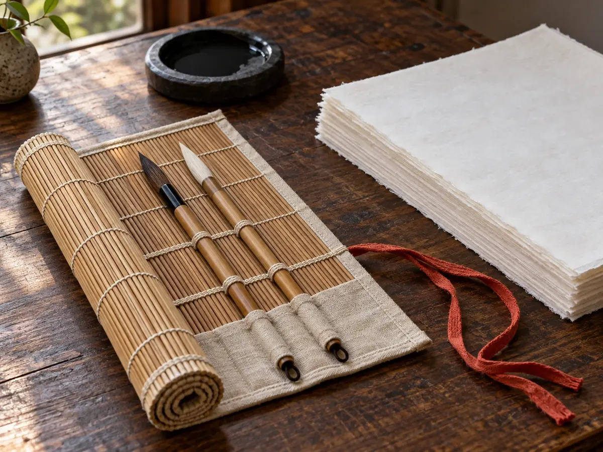
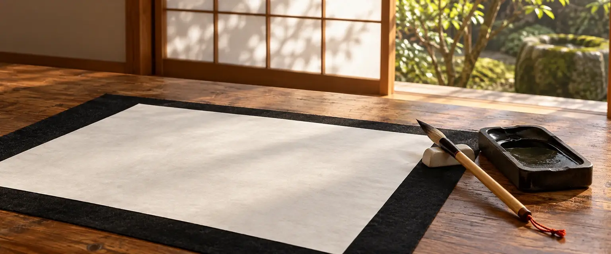

最初の稽古では、手本を見ずに、いつもの字で名前を書いていただきます。そこに出る癖は、直すものというより、知っておくもの。癖が分かると、手本のどこを見ればよいかが分かります。
右上がりになる
横画が右へ上がり、
字が傾く。止めが流れる
止めるところで、
筆が抜ける。字と字が詰まる
並べると、
息苦しく見える。
一 教室の考え方
自分の字の癖を、まず知る。

二 大人の稽古、一回の流れ
墨をすって、九十分。

- 十分墨をする手を落ち着ける
- 十分手本を見る筆の入りと抜きを
- 二十分いつもの字で手本を横に置いて
- 十五分癖を見つける違いを一つだけ
- 三十分もう一度書くその一つを意識して
- 五分片づける一枚を持ち帰る
帯の長さは、時間の長さです。子どもの稽古は、墨をする時間を短くして同じ順で進めます。

| 大人の稽古月2回・ | 子どもの稽古小学生・ | |
|---|---|---|
| はじめは | 楷書の基本の線から。再開の方は、好きな書体から。 | 筆の持ち方と、とめ・はね・はらいから。 |
| 予約・課題 | 週の枠の「大人」から、月に2回を予約します。 | 学校の書写や、書き初めの課題も見ます。 |
| 休んだら | 同じ月の別の回へ振り替えられます（空きがある場合）。 | 第4週の土曜に振り替えられます。 |
| 時刻 | 火 | 木 | 土 |
|---|---|---|---|
| 10:00〜11:00 | ― | ― | 子ども第1〜3週 |
| 11:15〜12:45 | ― | ― | 大人毎週 |
| 18:30〜20:00 | 大人毎週 | 大人毎週 | ― |
どの回も6名まで。机はひとり一台です。
三 大人と子どもの稽古
稽古の日を、えらぶ。

- 体験
- 筆・硯・文鎮・下敷き・半紙を、すべてお貸しします。
- 入会後
- 教室の道具を続けて借りられます。貸し出しの費用はかかりません。
- 買う場合
- 筆・硯・文鎮・下敷きの一式で、5,500円前後（税込）が目安です。急いで揃える必要はありません。
四 道具
道具は、お貸しします。
- 場所
- 架空県風見坂 古民家の一室
- 道順
- 坂を上り、途中の角を左へ
- 車
- ありません（近くの駐車場へ）
- 送り迎え
- お子さまの稽古の前後は、玄関で待てます
五 場所とよくある問い
坂の上の、古民家で。
字に自信がありません。それでも大丈夫ですか。
大丈夫です。最初にいつもの字を書いていただくのは、上手下手を見るためではなく、癖を知るためです。
どのくらい通えば、上手になりますか。
お約束はできません。通う回数や、家で書くかどうかで変わります。稽古では、毎回一つだけ癖に気づくことを大切にしています。
子どもの稽古は、保護者が見学できますか。
体験のときは、部屋の後ろで見学できます。入会後も、前もってお知らせいただければ見学できます。
体験のあと、すぐに決めなくてはいけませんか。
いいえ。続けるかどうかは、ゆっくり考えてからお知らせください。
よくある質問
よくある問い。

- 申し込みのあと
- 日時の確認を、メールでお送りします。返信の目安は【要確認】。
- 持ち物
- 手ぶらで構いません。書いた一枚を持ち帰る袋があると便利です。
- 服装
- 汚れてもよい服でお越しください。
六 体験の申し込み